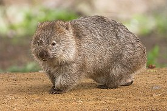

Вомбатовые обитают в южной и восточной части Австралии, в штатах Южная Австралия, Виктория, Новый Южный Уэльс, Квинсленд и Тасмания. Распространены в различных местообитаниях, но нуждаются в подходящей для рытья нор почве.
Короткошёрстные особи вомбатовых проживают в штатах Новый Южный Уэльс и Южная Австралия, Виктория. Меньшие по размерам подвиды живут на островах Тасмания и Флиндерс. Они занимают территории с удобными для рытья нор почвами в лесах и редколесьях, пустошах и альпийских зонах.
